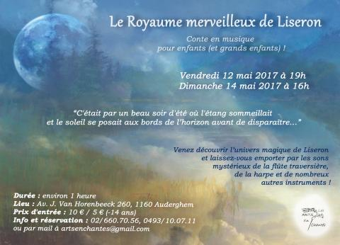
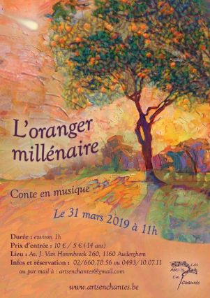
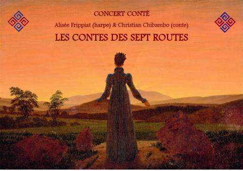
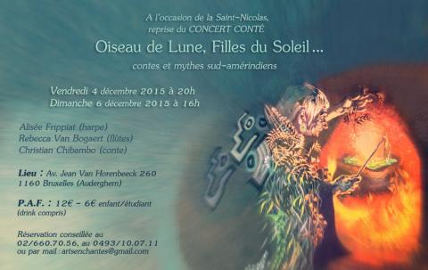
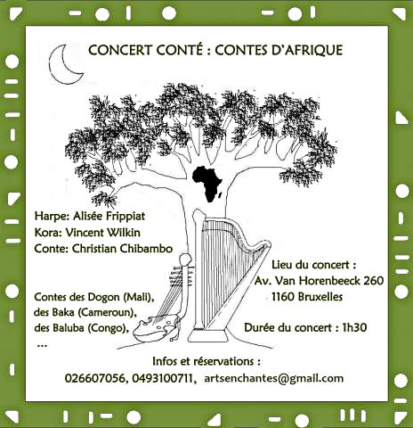

ARTS EnChantés ASBL


Intrigue :
"C'était par un beau soir d'été où l'étang sommeillait
et le soleil se posait aux bords de l'horizon avant de
disparaître..."
Le petit Jean arrive en sautant sur la pelouse,
il vient admirer les nuages dorés ! Un héron solitaire,
perché sur une patte, médite en contemplant le lac.
Une vieille barque flotte calmement sur l’eau. Jean
avait reçu l’ordre de n’y monter sous aucun prétexte,
mais plus que jamais, ce soir, la tentation est grande !
Jean s'embarque alors dans une aventure sans pareil avec
son ami magique Liseron, il découvre un monde que les humains aperçoivent rarement,
où les moindres bruits racontent une histoire et où les lucioles s'endorment
en regardant leurs grands-parents les étoiles...
Description : Conte en musique pour petis et grands ! Voyage dans l'univers magique de Liseron, à travers les sons mystérieux de la flûte traversière, de la harpe et de nombreux autres instruments !
Artistes : Rebecca Van Bogaert (conte, chant, flûtes, et autres instruments) & Alisée Frippiat (harpe, chant, et autres instruments).

Intrigue :
Ilyas habite avec son père dans un pays où il fait toujours chaud.
Un pays où les vallées sont des dunes de sable et où les arbres portent des fruits merveilleux.
Le petit garçon rêve de sa maman disparue comme par enchantement quand il était petit.
Jusqu'au jour où son père lui raconte la légende de l'oranger millénaire...
Description : Conte en musique pour petits et grands ! Voyage dans l'univers des pays arabes, à travers les sons mystérieux de la flûte traversière, de la harpe et de nombreux autres instruments !
Artistes : Rebecca Van Bogaert (conte, chant, flûtes, et autres instruments) & Alisée Frippiat (harpe, chant, et autres instruments).

Intrigue : Qu'arrive-t-il lorsque la fille d'un roi et le fils d'une sorcière tombent amoureux l'un de l'autre ? Des larmes, des sortilèges, des rires, des voyages à raconter dans lesquels l'imaginaire et l'extraordinaire rivalisent pour notre plaisir !
Description : Concert-conté avec harpe, et traditions orales d'Asie-Mineure (Kurdes, Turques,...).
Artistes : Alisée Frippiat (harpe) & Christian Chibambo (conte).

Intrigue : Avec un colibri, un moineau, une chouette et un engoulevent, envolons-nous sur les ailes des contes entre soleil et lune, entre ciel et terre, entre ombre et lumière, nous nicherons sur les arbres d'Amazonie et sur les montagnes des Andes, l'amour se mêlera parfois au vol pour se brûler les ailes...
Description : Concert-conté avec harpe et flûte (Cras, Debussy, Smetana, ...), et traditions orales sud-amérindiennes (Ashéninka, Quechua, Guarani).
Artistes : Alisée Frippiat (harpe), Rebecca Van Bogaert (flûte) & Christian Chibambo (conte).

Intrigue : Comment apprendre à marcher sans accepter de tomber ? La question se pose peut-être au Mali où une grosse goûte d'eau reste suspendue en l'air, et au Congo où des fruits mûrs ne se laissent pas détacher des arbres, au Cameroun où un oiseau veut rester sur la cîme d'un arbre, au Kalahari où des lions ne descendent pas de leur fierté...
Description : Concert-conté avec kora et harpe (Fauré, Ortiz,...), et traditions orales d'Afrique (Baluba, Baka, Dogon,...).
Artistes : Alisée Frippiat (harpe), Vincent Wilkin (kora) & Christian Chibambo (conte).
